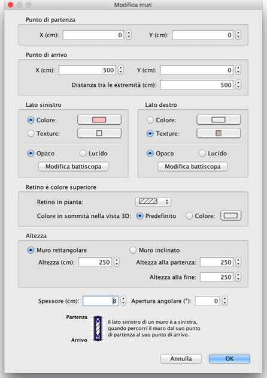

| Modificare muri | |||
|
Puoi modificare la posizione e la lunghezza dei muri della
casa, tramite il mouse oppure attraverso la voce di menù Piano
> Modifica muri... quando un muro è selezionato nella piantina puoi inoltre muovere il suo punto di inizio e il suo punto di fine, tramite l'indicatore di misura che appare alla fine di ogni muro selezionato.
|

|
|
Quando il puntatore del mouse è sul punto iniziale o finale
del muro selezionato, cambia per indicare che puoi trascinare
quel punto per muoverlo. Mentre il pulsante del mouse è premuto,
un suggerimento mostra la lunghezza del muro. Un muro può essere inoltra modificato grazie al suo pannello, facendo doppio click in quel muto nella piantina della casa o scegliendo Piano > Modifica muri... dopo averlo selezionato.  Nel pannello relativo al muro, puoi cambiare le coordinate del
punto d'inizio e di fine, i colori o i rivestimenti dei lati
destro e sinistro, il suo spessore e la sua altezza. |
|